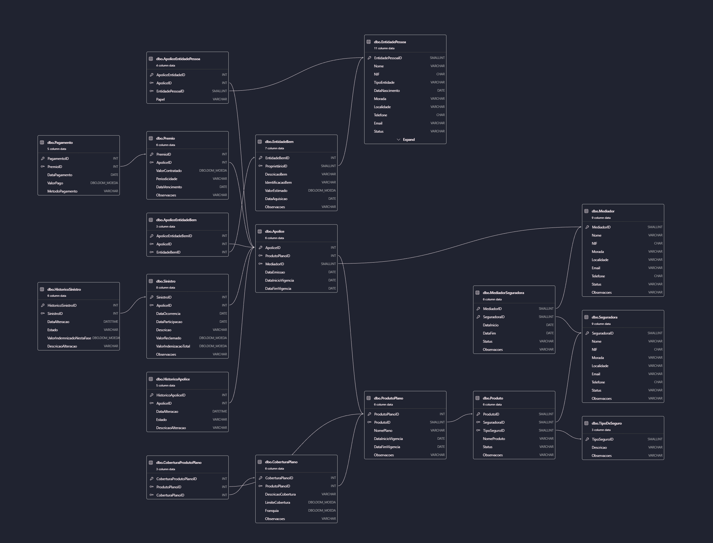

O modelo relacional da base de dados é apresentado na imagem seguinte, detalhando as tabelas, os seus atributos e as relações entre elas.
Optou-se por separar as entidades EntidadePessoa (que inclui pessoas singulares e coletivas, com NIF e data de nascimento/constituição) e EntidadeBem (objetos com identificação e valor estimado). Esta separação evita inconsistências, assegurando que apenas pessoas possam assumir o papel de tomador e que os bens sejam exclusivamente objetos de seguro.
Incluiu-se explicitamente a entidade Mediador e a respetiva relação MediadorSeguradora, permitindo gerir múltiplos agentes e os seus períodos de atividade com cada seguradora.
Foram criadas as tabelas-espelho HistoricoApolice e HistoricoSinistro, que registam todas as alterações de estado, datas e descrições, permitindo preservar o histórico sem sobrecarregar as tabelas transacionais ativas.
Foi criado o tipo de dado Dom_Moeda (decimal 10,2) e a regra RL_ValoresMonetarios, garantindo que valores financeiros (prémios, franquias, indemnizações) nunca sejam negativos, centralizando a lógica de validação.
Utilizou-se extensivamente chaves estrangeiras (FOREIGN KEY) e restrições CHECK em campos de estado, assegurando a qualidade dos dados inseridos.
Todos os relatórios foram encapsulados em views, facilitando a reutilização e manutenção do código.
Utiliza um LEFT JOIN para garantir que tipos de seguro sem contratos também sejam listados, permitindo identificar lacunas na oferta.
Filtra os contratos pela data de vigência atual (GETDATE() BETWEEN DataInicioVigencia AND DataFimVigencia), contabilizando apenas apólices realmente ativas.
Calcula a média (AVG) dos valores contratados na tabela Prémio, agrupados pela descrição do tipo de seguro.
Utiliza uma expressão CASE para criar uma coluna legível "MaisDeUmContrato" ('Sim'/'Não'), facilitando a identificação visual de clientes com maior fidelização.
Cruza dados de contratos com pagamentos, usando um LEFT JOIN para garantir que todos os contratos sejam listados, mesmo aqueles que ainda não tenham qualquer pagamento associado.
Utiliza a função SUM(p.ValorPago) em conjunto com ISNULL para tratar casos sem pagamentos, e aplica a cláusula HAVING para filtrar as seguradoras com um volume financeiro superior a um limite (definido como 1000 no script).
Utiliza TOP 10 ordenado de forma decrescente pela contagem de sinistros, destacando as apólices com maior exposição ao risco.
O relatório proposto consiste na criação de uma view que permite visualizar o histórico das apólices. Para a gestão financeira, é fundamental monitorizar o ritmo e as mudanças de estado de cada apólice, pois este relatório permite identificar tendências, cancelamentos e picos de venda, essenciais para o planeamento dos objetivos comerciais.
A implementação técnica deste relatório baseou-se na tabela HistoricoApolice. Criou-se uma view genérica com os dados desta tabela e, através de agrupamentos e ordenações, é possível obter dados para fins de auditoria e análise da produtividade do negócio (por exemplo, identificar meses com maior número de cancelamentos de apólices, tipos de seguro ou seguradoras com mais cancelamentos, ou períodos de maior celebração de apólices).
A funcionalidade proposta e implementada expande o sistema para suportar uma rede de mediadores. O sistema deixa de ser mono-utilizador, passando a permitir que vários mediadores (agentes) registem apólices sob a mesma infraestrutura, possibilitando analisar a performance individual de cada um. Para implementar esta funcionalidade, foram seguidas as seguintes regras de negócio:
Com esta nova funcionalidade, a empresa beneficia de uma maior escalabilidade, podendo contratar novos agentes sem alterar a estrutura de dados. Permite também um maior controlo de desempenho, possibilitando a criação de rankings de vendas por mediador. Por fim, reforça a segurança, pois cada apólice tem um “dono” registado, facilitando a atribuição de responsabilidades.